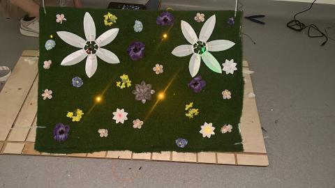

Changi Business Point Nighttime Revitalization Project
As part of a collaborative project during my 2nd term at SUTD, my team designed an interactive kinetic lighting installation aimed at enhancing urban public space engagement at Changi Business Point. The solution integrated servo-controlled mechanical flower structures engineered to simulate natural blooming motions alongside custom ambient LED lighting deployed across public seating areas to replicate dynamic firefly effects. Through hands-on prototyping and control system integration, the project aimed to elevate spatial aesthetics and improve evening foot traffic atmosphere while also demonstrating the potential of nature inspired interactive designs in public.

Skills Learnt
- Technical: Python Programming with Arduino for the control of lights and servo of the system, basic electrical wiring to power the mechanisms of the system
- Soft: Learning how to deal with conflict in a group setting, building up resillience due to the many failed attempts
Reflection
While the final prototype had room for higher technical refinement, it marked a pivotal entry into multi-faceted design execution. As my first semi-large-scale project, it acted as a proving ground for taking open ended challenges and turning them into a feasible idea. Navigating the friction between creative ideation and strict project scope taught me lessons in prototyping, teamwork, and risk mitigation skills that now form the foundation of my approach to complex design thinking projects.